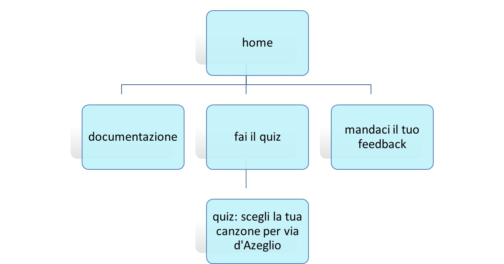
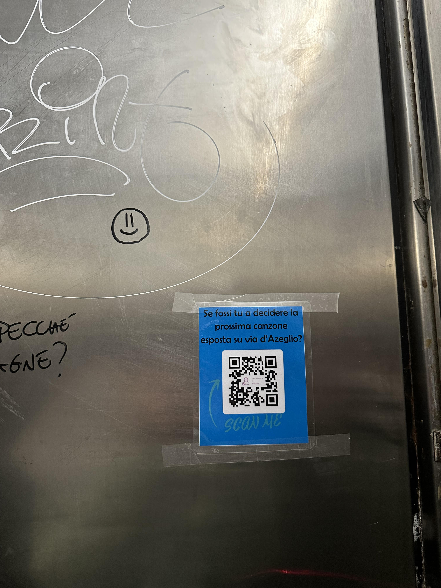

Abstract
Il progetto è nato dall’idea di creare qualcosa di diverso a tema “musica” per la città di Bologna.Il sito permette, attraverso un percorso guidato (questionario), di proporre secondo i propri gusti musicali, una canzone da esporre in via d’Azeglio. La novità non è l’esposizione della canzone, che infatti è presente da diverso tempo ed è molto famosa in tutta Italia e incuriosisce anche turisti stranieri, ma la possibilità di lasciare la decisione ai cittadini bolognesi o chiunque voglia, a prescindere da età o gusti musicali; il sito è quindi aperto a tutti.
Benchmarking
Obiettivi:obiettivo del sito è di coinvolgere i cittadini bolognesi e non alla partecipazione di un famoso progetto che esiste a Bologna da molti anni con la finalità di far sentire l’utente parte della città in cui vive o di contribuire a rendere ancora più attrattiva questa città. Target utente: il sito si rivolge a tutte le età, ma si prevede che verrà maggiormente utilizzato da utenti che hanno una sufficiente capacità di usare internet, quindi adulti fino a 70 anni.
Competitors:
- My sweet melodies
Sito web in cui è possibile acquistare una ninna nanna personalizzata, su una base predefinita, inserendo nome del bambino, colore degli occhi e capelli
- Publivale.com
Sito di un Music Provider che crea e personalizza radio in Store dedicate a centri commerciali, aziende e negozi. Si occupa anche della Produzione di Spot Pubblicitari per radio FM, creazione di Web Radio di ogni genere musicale.
- Mapness
Sito web che permette di creare mappe personalizzate di tutto il mondo, cercando un’ubicazione e personalizzando il layout della mappa e del poster.
Struttura e layout
Architettura del sito
Wireframe


Look and Feel
Il sito è stato creato sulla base di un template, pertanto non tutte le scelte sono state compiute da parte del creatore del sito.Il sito ha un’impostazione semplice, a sfondo bianco con una cornice multicolore sui toni dell’azzurro presente sulle due pagine del sito, home e documentazione.
La grafica del questionario, creato con un editor esterno, riprende gli stessi toni del rosa del logo. Ma il bottone per passare alla domanda successiva e per inoltrare la risposta dell’ultima domanda è di colore celeste come parte della cornice.
Il colore azzurro scuro dei link presenti nel footer della pagina è stata pensato sempre riprendendo l’azzurro della cornice.
Il font-family scelto per il sito è Space Mono, in particolare i caratteri Monaco, Menlo, Consolas e monospace; mentre il font scelto per il questionario è Jura, simile al font principale del sito.
Il logo è stato creato con Words, usando le icone predefinite, ma personalizzandolo i colori e lo stile.
Ciò che cattura maggiormente l’attenzione dell’utente quando visita il sito è l’immagine in primo piano di via d’Azeglio e le scritte delle canzoni sopra di essa, ciò ha la finalità di dare un grande impatto visivo facendo comprendere meglio il tema principale del sito.
Linguaggi e strumenti
Linguaggi: HTML, CSS, JavacriptStrumenti: template html e css esistente in cui sono stati utilizzati bootstrap per la grafica, google font API per i fonts, adobe colors per i colori, favicon.io per il favicon; per la creazione del questionario è stato utilizzato jotform e per la pubblicazione del sito github.
Inoltre, per la creazione del diagramma ad albero è stato utilizzato Words e del wireframe Moqups.com.
Per l’analisi dei dati del sito è stato usato Google Analytics.
Comunication strategy document
Background
Riprendendo i competitors già analizzati, si può facilmente dedurre che il sito La tua musica a Bologna ha elementi in comune con questi ma il suo obiettivo è differente.Il sito per personalizzare ninne nanne online è efficace ma ha una scarsa offerta, l’utente quindi arriva sul sito con determinate aspettative che non vengono poi soddisfatte.
Gli altri due competitors analizzati offrono una personalizzazione di servizi più originali e sicuramente più ricercati sul mercato dagli utenti. I siti sono organizzati bene, il messaggio è semplice e chiaro come i passaggi per ottenere il servizio.
Il sito La tua musica a Bologna offre un servizio di personalizzazione diverso: attraverso i propri gusti musicali la modifica di un progetto a Bologna già esistente. La struttura e la grafica del sito, come quelle dei siti dei competitors analizzati, è pulita e intuitiva.
Obiettivi comunicativi
Obiettivo del sito, come già descritto nel Benchmarking, è quello di coinvolgere più persone possibili, ma in particolare chi vive a Bologna, nella scelta delle canzoni da esporre su via d’Azeglio. Questa attrazione è presente a Bologna dal 2018 e fino ad oggi le scelte delle canzoni effettuate dal comune di Bologna hanno riguardato artisti bolognesi, come Cesare Cremonini o Lucio Dalla oppure sono state strumento di diffusione di messaggi importanti, ad oggi ad esempio è presente la canzone “Imagine” di John Lennon con l’obiettivo di diffondere un messaggio di pace.Gli obiettivi comunicativi prefissati sono:
- 50 visite al sito
- 3 recensioni sul sito web
- 10 proposte di canzoni tramite il questionario presente sul sito
Target audience e messaggio
Il sito quindi si rivolge a tutti, a bambini, adulti e anziani, ai cittadini bolognesi ma anche a tutti coloro che conoscono l’esistenza di questa particolare attrazione. Più utenti di fasce d’età e provenienza diverse partecipano più i risultati sono diversificati tra loro e possono essere analizzati considerano l’età il genere musicale e la canzone scelti.Unico ostacolo di questa proposta è il mezzo di diffusione, cioè internet, per il semplice motivo che le fasce d’età più avanzate non hanno un uso avanzato del web e con più difficoltà possono venirne a conoscenza; per questo motivo il sito verrà pubblicizzato anche con dei poster sparsi per la città.
Si può affermare che il fine principale del sito è quindi un engagement sociale per l’abbellimento e attrattività di Bologna.
Promozione
Per la promozione del sito sono stati scelti due metodi:- Link condiviso su WhatsApp con descrizione del progetto e invito alla partecipazione
- Poster con codice QR del sito stampato e affisso in luoghi strategici, come ascensori delle aule studio e biblioteche universitarie e aree nel centro storico dove vengono pubblicizzati altri poster di eventi o corsi o qualsiasi servizio che possa interessare.
Valutazione dei risultati
Tramite la condivisione del link WhatsApp e l’affissione dei poster, tutti gli obiettivi sono stati raggiunti
Report Google Analytics delle 50 visite
Immagine del poster appeso

Screenshot delle risposte al questionario di diverse fasce d'età


Screenshot delle recensioni ricevute